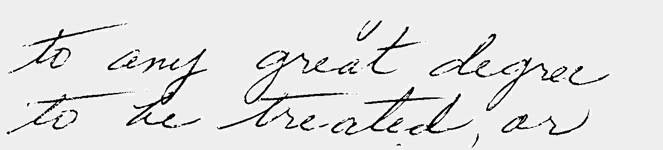
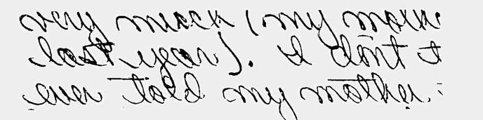
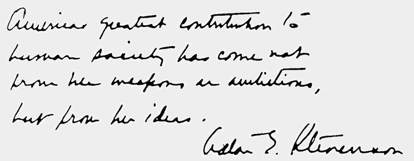
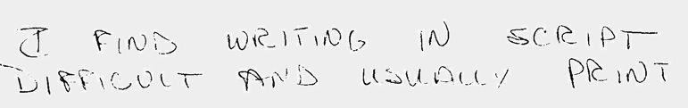
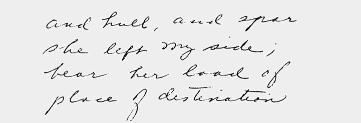
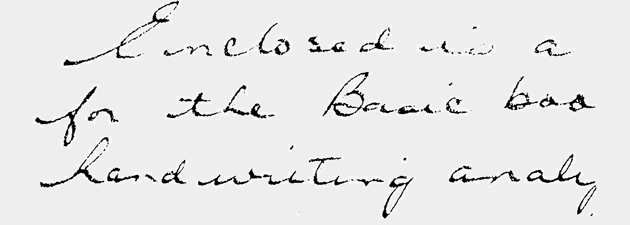
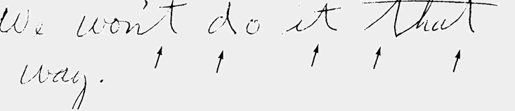

Eldene Whiting wrote a fantastic book called Traitsmatch that helps people understand their "Occupational Personality" through handwriting analysis. Take a few minutes and give it a try to see what your writing tells you about the kinds of jobs that would be a perfect match for you! Here, with Eldene's permission, is an excerpt from her book .
This is Part 2 - to go to Part 1 (you should read this first) click HERE.
5. Can I achieve my ambitions....
Check diagonals, t-bars and pressure.

"Ambition" Diagonals, High t-bars, strong pressure
Diagonals indicate the drive and direction you want togo. High
t bars show the ambitious ideas you will add. The strong pressure
indicates how much vital energy you are willing to use.
6. ....or am I only fooling myself?
Check your ovals.

"Self deception" left looped ovals
Ovals reflect your thinking clarity. Looping on the left means
you may be kidding yourself.
7. What's the use of fooling around? It's straight to the top for
me!
Traitmatch your Leaderscript.

"Leadership" Large caps, strong pressure, harmonious
Large capitals show yourconfidence in yourself. Strong pres-
sure enhances the energy and vitality. Harmonious picture indi-
cates your ability to balance thinking and action.
8. What about my money skills?
Examine your numbers, spacing, margins, i-dots and t-bars.
"Money skills" Good number picture
Clearnumbersand a"checkee'two(2) show moneyawareness.
Spacing of margins and lines indicate your sense of the right way
todothings. Precise placement of i dots and t bars show accuracy.
9. How's my mechanical ability?
Check for use of printing; size and legibility of writing.

"Mechanical" Printing, size, legibility
Printing shows a mechanical mind more concerned with "things"
than with people. Large MZH means you prefer large pieces of
machinery like computers or bulldozers. Small MZH indicates
interest in small things like watches, parts of machines. Legibility
reveals your willingness to do a good job which assures you of
success.
10. Am I quick to act or cautious about my decisions?
Traitmatch for speed, pressure, beginning strokes, and length of
t-bars.

"Impulsive" Speed, t cross
Speed is sometimes hard to detect in writing; i dots and t bars
that fall to the right of the stem show quick thinking and acting.
If the t bar is also long and tapered, the speed is greater.

"Cautious" Beginning strokes, short t cross
Long beginning strokes indicate caution. If there isalsoa little
glob of ink at the beginning, this hesitation is usually caused by
fear. Short t crosses also help to "pull back" from impulsive be-
havior.
11. I've analyzed my handwriting, but still have difficulty
believing what I found, even though my best friends agree.
Check for brace-like t's and d's and heavy pressure.

"Stubbornness" Braced strokes, heavy pressure, blunt
Braced strokes in t's and d's are a sure sign of stubbornness.
Pressure adds force. Blunt endings to letters on words reflect a
blunt tongue as well.
*******************************************
Experience the thrill of analyzing handwriting! Entertain
family and friends by showing them what their handwriting
reveals.
Handwriting
Insights is a high quality deck of 64 connected,
illustrated cards that teaches you handwriting analysis as
you use it. Analyze handwriting in 5 minutes. Results are
worded constructively so people feel good about what you
have to say.


We
are closing out our inventory. While supplies last you can
order your kit
Book Clearing House
for only $10.95.
Or, if you prefer to order over the telephone you can call
Book Clearing House
In the United States, dial toll-free: (800)
431-1579.
International
customers, please call: (914) 835-0015.
***Disclaimer
- This information is intended as amusement only. The
author and Hidden Creek Farm, Inc. hereby waive any
liability associated with one's use of this information in
performing such analysis on any handwriting
sample.***Copyright
2004 Hidden Creek Farm, Inc. All rights
reserved.